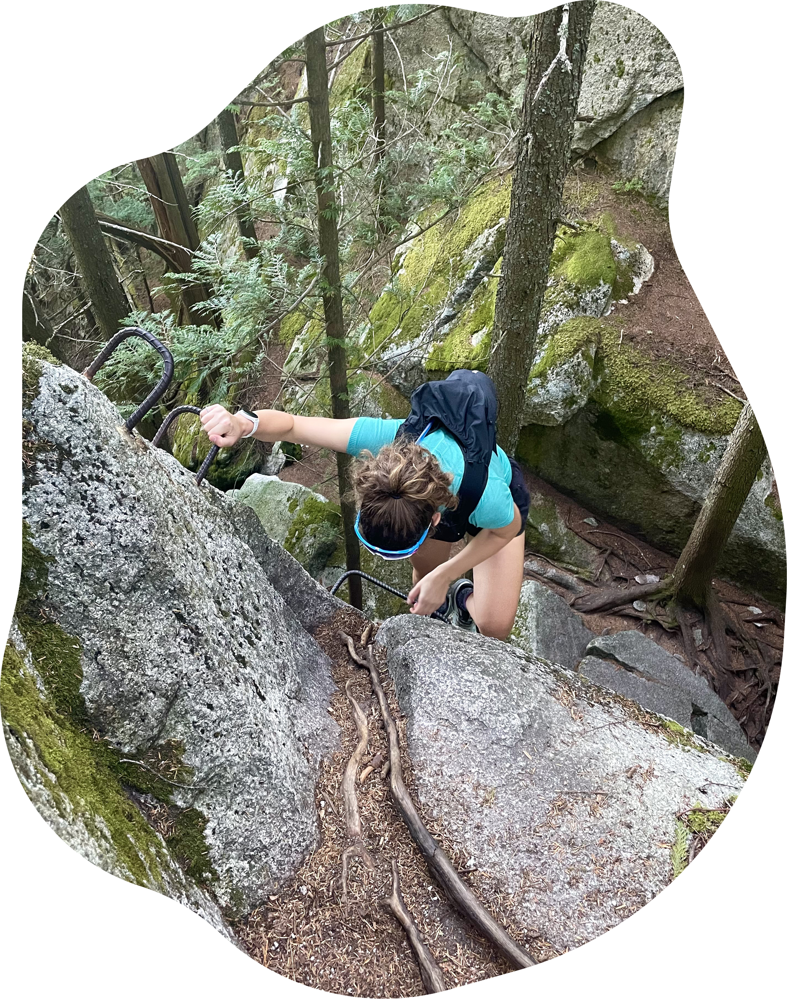

About me
I’m a product designer passionate about building thoughtful, socially and environmentally conscious products. I’ve worked across a variety of organizations, where I’ve developed experience in UX design, research, project management, and front-end development. I care deeply about using a user-centred, data-driven approach to design experiences that are intuitive for users and meaningful in their real-world impact.

In my spare time, you’ll usually find me hiking, mountain biking, climbing, or skiing depending on the season. I love being outdoors and staying active, especially in places that feel a bit remote or challenging to get to. When I’m not outside, I’m usually behind a camera capturing moments from my travels, exploring new places with friends, or slowing things down at home by taking care of my ever-growing jungle of houseplants. I also tend to collect hobbies wherever I go—anything hands-on that lets me switch off from screens and experiment a bit. This could be anything from scrapbooking to 3D printing or whatever new craft or process I’ve become curious about most recently.